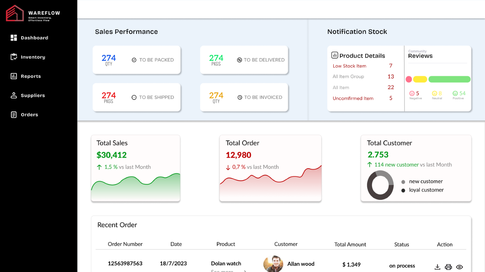
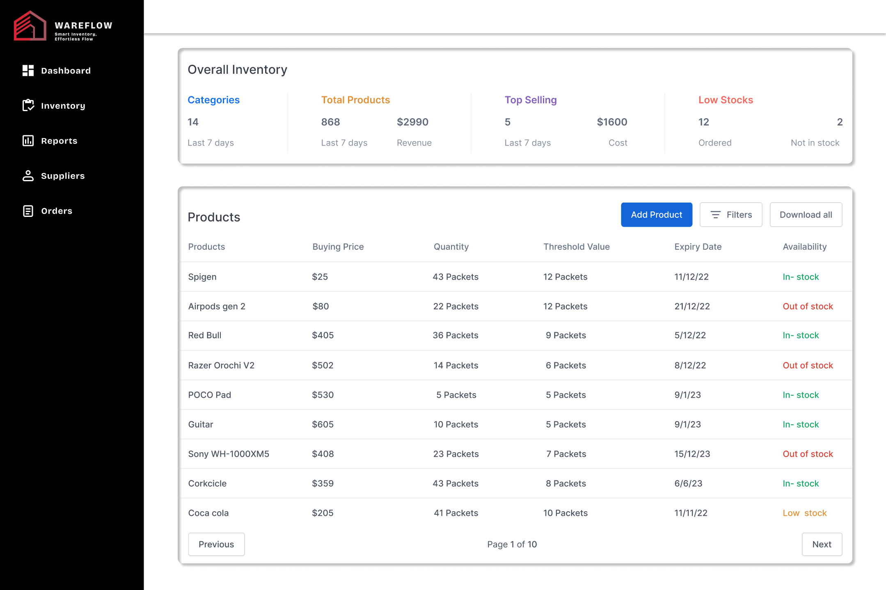
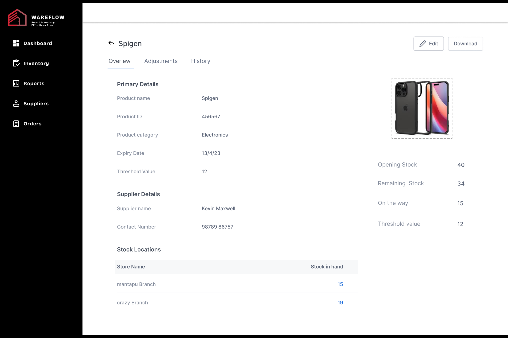
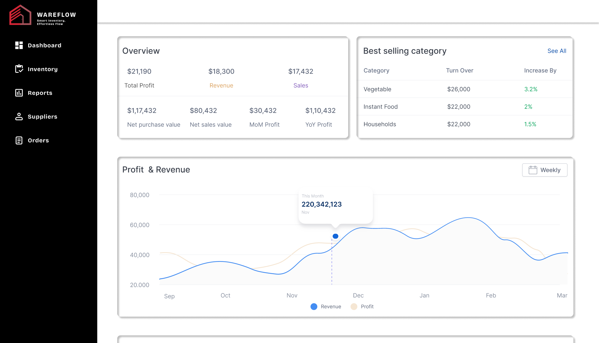
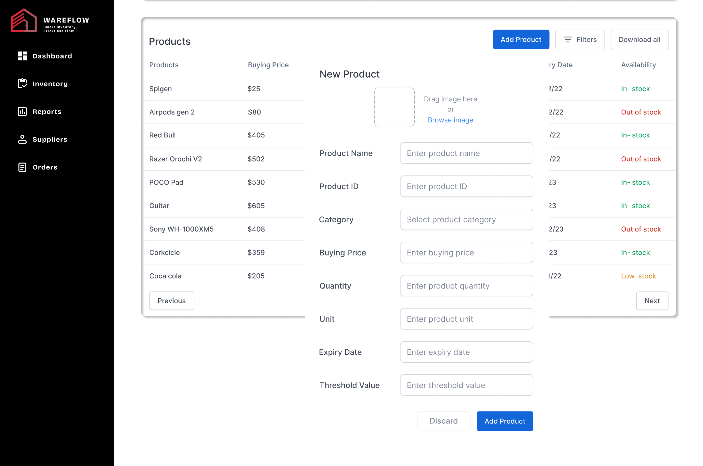

Wareflow - UI/UX Design for a Warehouse Management System

Project Information
Wareflow is a comprehensive UI/UX design project for a modern Warehouse Management System (WMS). The goal was to design a clean, data-driven, and intuitive interface to help warehouse managers track inventory, process orders, and analyze performance efficiently. The design includes a full component system, multiple screen layouts, and an interactive prototype to simulate user flows.
Tools & Skills
- Figma (for all design and prototyping)
- UI/UX Design
- Component-Based Design System
- Interactive Prototyping
- User Flow Mapping
Design Screenshots



